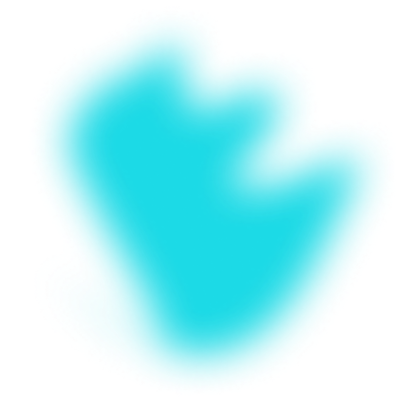
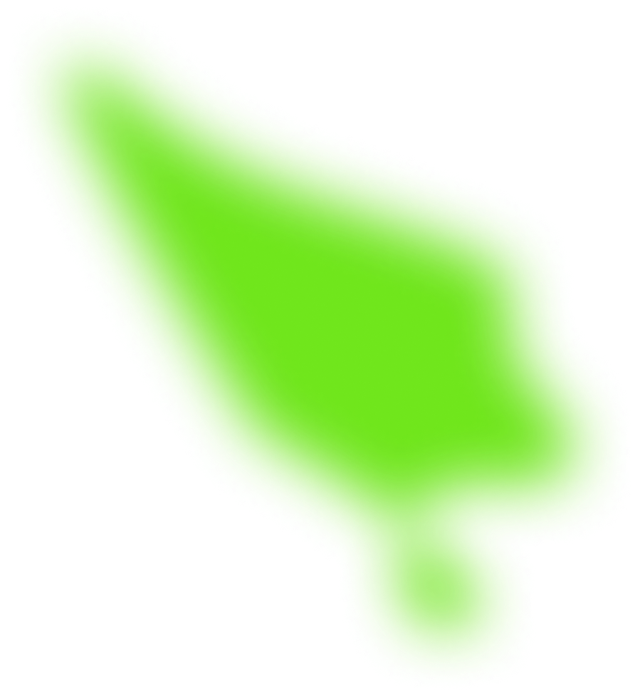

<a id="portfolioSection" class="anchor"></a>

<div class="portfolio-section-container">
  <div class="section-headline-container" data-aos="fade-right"
  data-aos-duration="1000">
    <div class="headline-container">
      <div class="border-purple" ></div>
      <p class="headline headline-padding" >Portfolio</p>
      
    </div>
    <p class="left-padding" >
      This page is a sample of my work - please feel free to try them out.
    </p>
  </div>

  <div class="margin-top-big"></div>
  
  <app-project-description
    [imagePath]="'assets/img/projectJoin.png'"
    [title]="'JOIN'"
    [frameworks]="'JavaScript | HTML | CSS'"
    [description]="
      'Task manager inspired by the Kanban System. Create and organize tasks using drag and drop functions, assign users and categories.'
    "
    [testLink] = "'https://stefan-anders.developerakademie.net/Join/index.html'"
    [githubLink] = "'https://github.com/HrAnders/JOIN_own'"
    [isFlexRowReversed]=false
    data-aos="fade-left" data-aos-duration="1000" data-aos-offset="150"
    >
  </app-project-description>

  <div class="margin-top-big"></div>

  <app-project-description
    [imagePath]="'assets/img/projectLoco.png'"
    [title]="'El Pollo loco'"
    [frameworks]="'JavaScript | HTML | CSS'"
    [description]="
      'A simple Jump-and-Run game based on an object-oriented approach. Help Pepe to find coins and salsa bottles to fight against the killer chicken.'
    "
    [testLink] = "'https://stefan-anders.developerakademie.net/loco/'"
    [githubLink] = "'https://github.com/HrAnders/ElPolloLoco'"
    [isFlexRowReversed]=true
    data-aos="fade-right" data-aos-duration="1000"
    >
  </app-project-description>

  <div class="margin-top-big"></div>

  <app-project-description
    [imagePath]="'assets/img/projectPokedex.png'"
    [title]="'Pokedex'"
    [frameworks]="'JavaScript | HTML | CSS | Api'"
    [description]="
      'Based on the PokéAPI a simple library that provides and catalogues pokemon information.'
    "
    [testLink] = "'https://stefan-anders.developerakademie.net/pokedex/'"
    [githubLink] = "'https://github.com/HrAnders/Pokedex'"
    [isFlexRowReversed]=false
    data-aos="fade-left" data-aos-duration="1000" data-aos-offset="150"    >
  </app-project-description>

  <div class="margin-top-big"></div>

  <app-project-description
    [imagePath]="'assets/img/projectFire.png'"
    [title]="'Ring of fire'"
    [frameworks]="'TypeScript | Angular | Firebase | HTML | CSS'"
    [description]="
      'An online version of the classic Ring of fire game. Play with friends at the same table from different locations.'
    "
    [testLink] = "'https://stefan-anders.developerakademie.net/angular-projects/ringoffire/'"
    [githubLink] = "'https://github.com/HrAnders/ringOfFire'"
    [isFlexRowReversed]=true
    data-aos="fade-right" data-aos-duration="1000"
    >
  </app-project-description>

  <div class="shadow-container">
    
  </div>

</div>
